Chapter 3 Geometric morphometrics - spatial
3.1 Load packages + data
# download most recent software version
#devtools::install_github("geomorphR/geomorph", ref = "Stable", build_vignettes = TRUE)
#devtools::install_github("mlcollyer/RRPP")
# load analysis packages
library(here)
library(StereoMorph)
library(geomorph)## Loading required package: rgl## Loading required package: Matrix##
## Attaching package: 'Matrix'## The following objects are masked from 'package:tidyr':
##
## expand, pack, unpacklibrary(ggplot2)
library(dplyr)
library(ggpubr)
library(wesanderson)
# read shape data and define number of sLMs
shapes <- readShapes("shapes")
shapesGM <- readland.shapes(shapes, nCurvePts = c(10,3,5,5,3,10))
# read qualitative data
qdata <- read.csv("qdata.csv",
header = TRUE,
row.names = 1)3.2 Generalised Procrustes Analysis
# gpa
Y.gpa <- gpagen(shapesGM, print.progress = FALSE)
## plot
plot(Y.gpa)
# dataframe
gdf <- geomorph.data.frame(shape = Y.gpa$coords,
size = Y.gpa$Csize,
region = qdata$region)
# add centroid size to qdata
qdata$csz <- Y.gpa$Csize3.3 Boxplot (centroid size)
# attributes
csz <- qdata$csz
region <- qdata$region
# palette
pal = wes_palette("Moonrise2")
# boxplot of Perdiz arrow points by region
ggplot(qdata, aes(x = region, y = csz, color = region)) +
geom_boxplot(notch = TRUE) +
geom_dotplot(binaxis = 'y', stackdir = 'center', dotsize = 0.3) +
scale_color_manual(values = pal) +
theme(legend.position = "none") +
labs(x = 'Region', y = 'Centroid Size')## Bin width defaults to 1/30 of the range of the data. Pick better value with `binwidth`.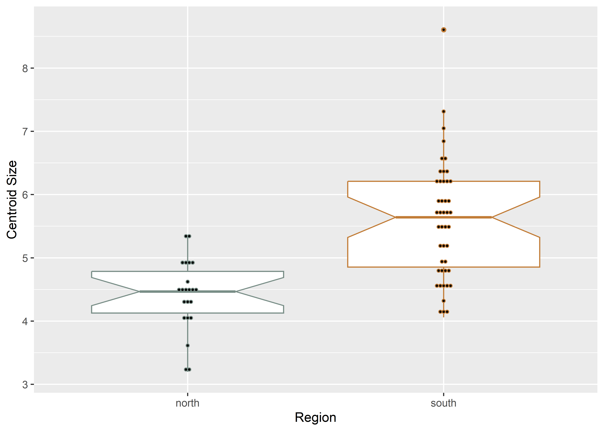
3.4 Principal Components Analysis
# pca
pca <- gm.prcomp(Y.gpa$coords)
summary(pca)##
## Ordination type: Principal Component Analysis
## Centering by OLS mean
## Orthogonal projection of OLS residuals
## Number of observations: 67
## Number of vectors 58
##
## Importance of Components:
## Comp1 Comp2 Comp3 Comp4 Comp5 Comp6 Comp7 Comp8 Comp9 Comp10
## Eigenvalues 0.005773408 0.004263677 0.00110953 0.0002718422 0.0002235284 0.0001238687 9.341316e-05 5.630102e-05 3.794795e-05 3.555976e-05
## Proportion of Variance 0.475367265 0.351059970 0.09135581 0.0223827748 0.0184047395 0.0101990267 7.691394e-03 4.635678e-03 3.124534e-03 2.927897e-03
## Cumulative Proportion 0.475367265 0.826427234 0.91778304 0.9401658161 0.9585705557 0.9687695824 9.764610e-01 9.810967e-01 9.842212e-01 9.871491e-01
## Comp11 Comp12 Comp13 Comp14 Comp15 Comp16 Comp17 Comp18 Comp19
## Eigenvalues 3.274869e-05 2.100995e-05 1.673629e-05 1.558522e-05 0.0000146522 9.479467e-06 8.202708e-06 6.581542e-06 5.623302e-06
## Proportion of Variance 2.696441e-03 1.729904e-03 1.378022e-03 1.283246e-03 0.0012064237 7.805144e-04 6.753894e-04 5.419068e-04 4.630079e-04
## Cumulative Proportion 9.898455e-01 9.915754e-01 9.929535e-01 9.942367e-01 0.9954431225 9.962236e-01 9.968990e-01 9.974409e-01 9.979039e-01
## Comp20 Comp21 Comp22 Comp23 Comp24 Comp25 Comp26 Comp27 Comp28
## Eigenvalues 4.551824e-06 4.004696e-06 2.780295e-06 2.539899e-06 2.053898e-06 1.684806e-06 1.383734e-06 1.008708e-06 9.296041e-07
## Proportion of Variance 3.747852e-04 3.297361e-04 2.289221e-04 2.091286e-04 1.691126e-04 1.387225e-04 1.139330e-04 8.305433e-05 7.654116e-05
## Cumulative Proportion 9.982787e-01 9.986085e-01 9.988374e-01 9.990465e-01 9.992156e-01 9.993543e-01 9.994683e-01 9.995513e-01 9.996279e-01
## Comp29 Comp30 Comp31 Comp32 Comp33 Comp34 Comp35 Comp36 Comp37
## Eigenvalues 7.104462e-07 6.995574e-07 5.611282e-07 4.574896e-07 3.740460e-07 3.295267e-07 3.023244e-07 2.819142e-07 1.822967e-07
## Proportion of Variance 5.849627e-05 5.759972e-05 4.620182e-05 3.766849e-05 3.079797e-05 2.713236e-05 2.489260e-05 2.321208e-05 1.500983e-05
## Cumulative Proportion 9.996864e-01 9.997440e-01 9.997902e-01 9.998278e-01 9.998586e-01 9.998858e-01 9.999107e-01 9.999339e-01 9.999489e-01
## Comp38 Comp39 Comp40 Comp41 Comp42 Comp43 Comp44 Comp45 Comp46
## Eigenvalues 1.544787e-07 1.175824e-07 1.003652e-07 8.345271e-08 3.996616e-08 3.159475e-08 2.666575e-08 2.255638e-08 1.462538e-08
## Proportion of Variance 1.271937e-05 9.681424e-06 8.263810e-06 6.871277e-06 3.290708e-06 2.601429e-06 2.195587e-06 1.857233e-06 1.204216e-06
## Cumulative Proportion 9.999616e-01 9.999713e-01 9.999796e-01 9.999864e-01 9.999897e-01 9.999923e-01 9.999945e-01 9.999964e-01 9.999976e-01
## Comp47 Comp48 Comp49 Comp50 Comp51 Comp52 Comp53 Comp54 Comp55
## Eigenvalues 8.448002e-09 6.927099e-09 3.723904e-09 3.152719e-09 2.374219e-09 1.963601e-09 1.208301e-09 6.656422e-10 4.846033e-10
## Proportion of Variance 6.955863e-07 5.703591e-07 3.066164e-07 2.595866e-07 1.954869e-07 1.616777e-07 9.948832e-08 5.480723e-08 3.990096e-08
## Cumulative Proportion 9.999983e-01 9.999988e-01 9.999991e-01 9.999994e-01 9.999996e-01 9.999998e-01 9.999999e-01 9.999999e-01 1.000000e+00
## Comp56 Comp57 Comp58
## Eigenvalues 2.571792e-10 1.910708e-10 8.289472e-11
## Proportion of Variance 2.117546e-08 1.573227e-08 6.825333e-09
## Cumulative Proportion 1.000000e+00 1.000000e+00 1.000000e+00# set plot parameters
pch.gps <- c(15,17)[as.factor(region)]
col.gps <- pal[as.factor(region)]
col.hull <- c("#798E87", "#C27D38")
## pca plot
pc.plot <- plot(pca,
asp = 1,
pch = pch.gps,
col = col.gps)
shapeHulls(pc.plot,
groups = region,
group.cols = col.hull)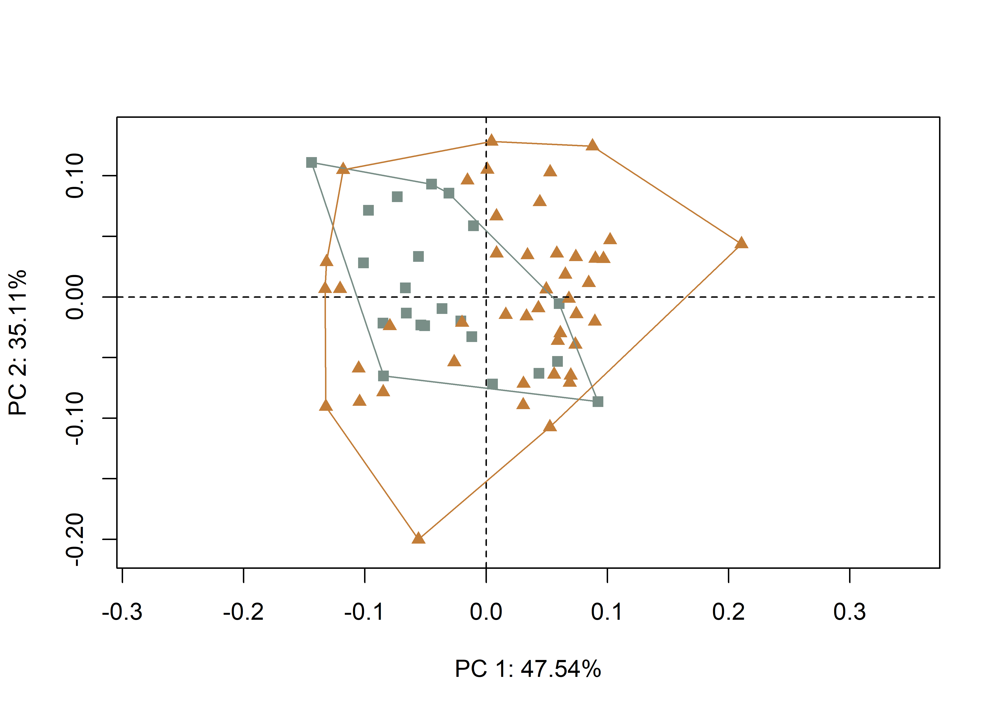
3.4.1 Minima/maxima of PC1/2 with warp grids
# plot x/y maxima/minima
## x - minima
mean.shape <- mshape(Y.gpa$coords)
plotRefToTarget(pca$shapes$shapes.comp1$min,
mean.shape)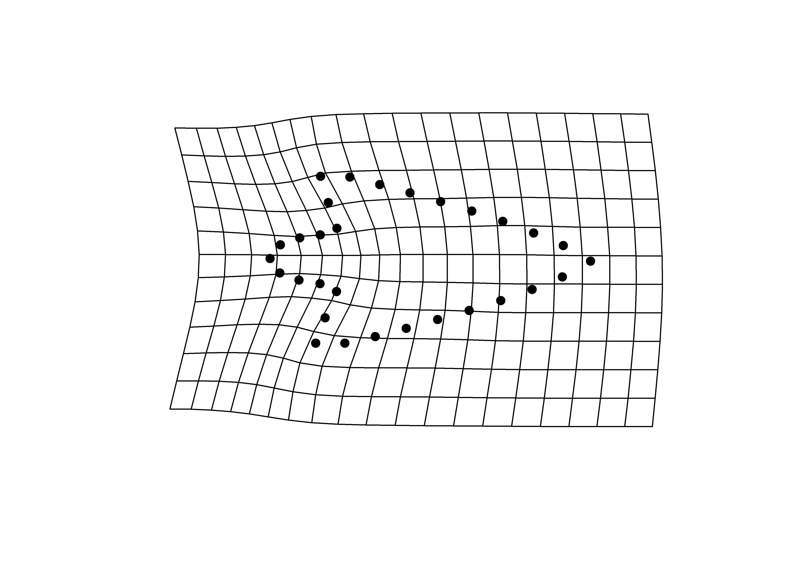
## x - maxima
plotRefToTarget(pca$shapes$shapes.comp1$max,
mean.shape)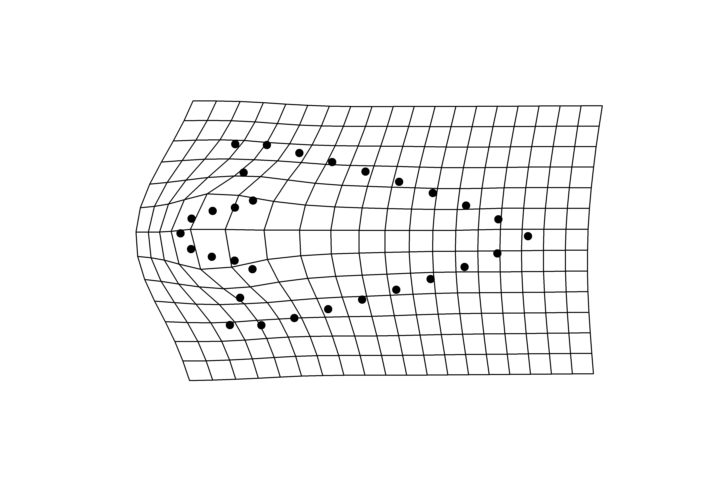
## y - minima
plotRefToTarget(pca$shapes$shapes.comp2$min,
mean.shape)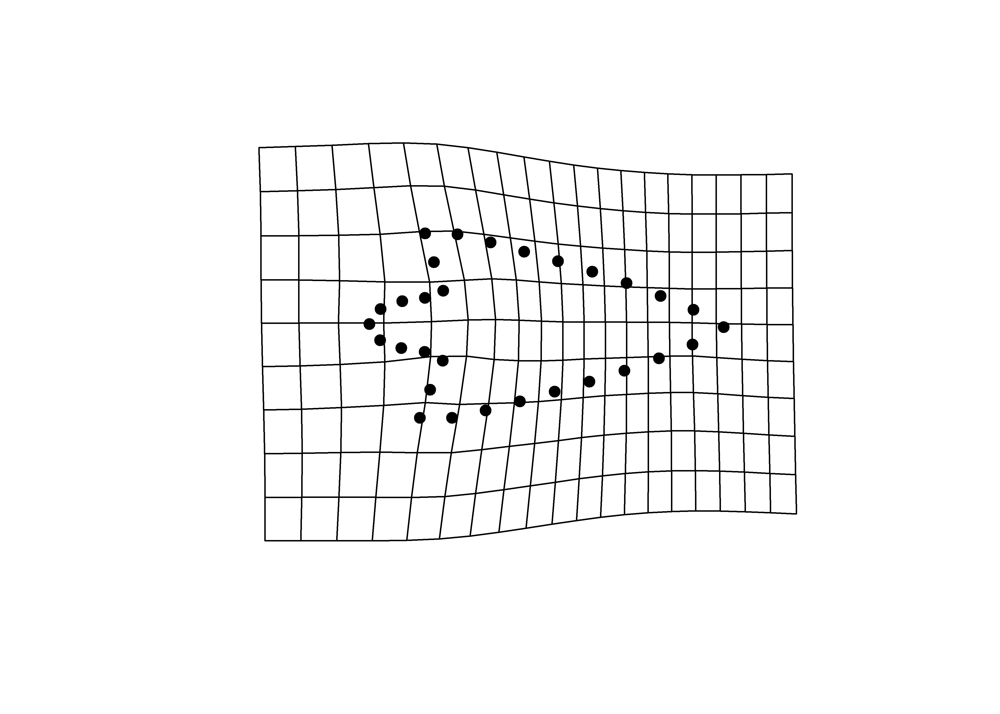
## y - maxima
plotRefToTarget(pca$shapes$shapes.comp2$max,
mean.shape)
3.4.2 Composite PCA with warp grids
## plot composite pca with PC1/2 max/min
knitr::include_graphics('figures/gm-pca.jpg')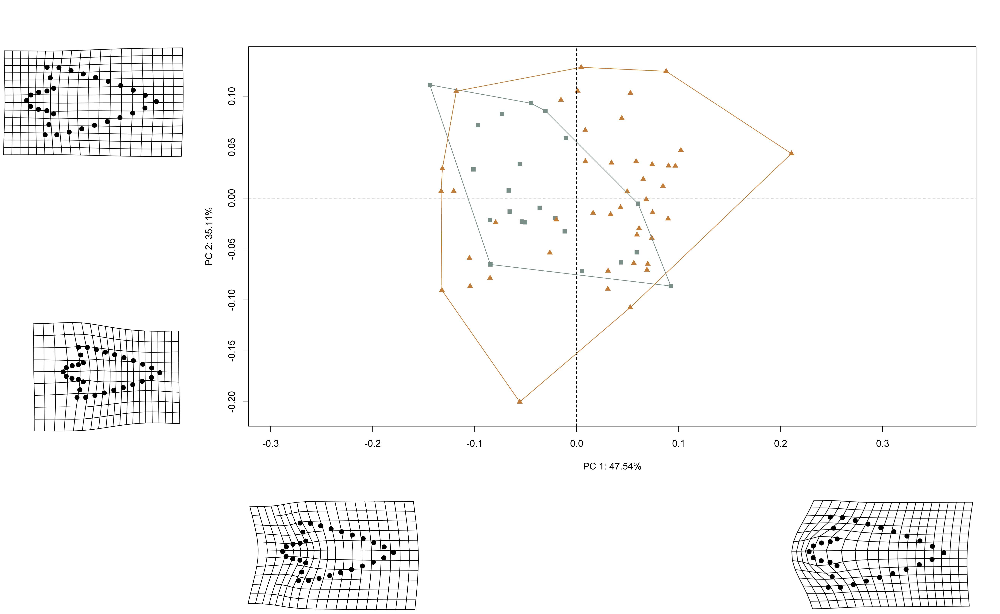
3.5 Procrustes ANOVA: Allometry
# allometry
fit.size <- procD.lm(shape ~ size,
data = gdf,
print.progress = FALSE,
iter = 9999)
# allometry
anova(fit.size)##
## Analysis of Variance, using Residual Randomization
## Permutation procedure: Randomization of null model residuals
## Number of permutations: 10000
## Estimation method: Ordinary Least Squares
## Sums of Squares and Cross-products: Type I
## Effect sizes (Z) based on F distributions
##
## Df SS MS Rsq F Z Pr(>F)
## size 1 0.11834 0.118340 0.14763 11.258 3.7912 1e-04 ***
## Residuals 65 0.68324 0.010511 0.85237
## Total 66 0.80158
## ---
## Signif. codes: 0 '***' 0.001 '**' 0.01 '*' 0.05 '.' 0.1 ' ' 1
##
## Call: procD.lm(f1 = shape ~ size, iter = 9999, data = gdf, print.progress = FALSE)# common allometries
fit.common<-procD.lm(shape ~ size + region,
data = gdf,
print.progress = FALSE,
iter = 9999)
# common allometries
anova(fit.common)##
## Analysis of Variance, using Residual Randomization
## Permutation procedure: Randomization of null model residuals
## Number of permutations: 10000
## Estimation method: Ordinary Least Squares
## Sums of Squares and Cross-products: Type I
## Effect sizes (Z) based on F distributions
##
## Df SS MS Rsq F Z Pr(>F)
## size 1 0.11834 0.118340 0.14763 11.5087 3.8235 1e-04 ***
## region 1 0.02515 0.025155 0.03138 2.4463 1.5172 0.0638 .
## Residuals 64 0.65809 0.010283 0.82099
## Total 66 0.80158
## ---
## Signif. codes: 0 '***' 0.001 '**' 0.01 '*' 0.05 '.' 0.1 ' ' 1
##
## Call: procD.lm(f1 = shape ~ size + region, iter = 9999, data = gdf, print.progress = FALSE)# unique allometries
fit.unique<-procD.lm(shape ~ size * region,
data = gdf,
print.progress = FALSE,
iter = 9999)
# unique allometries
anova(fit.unique)##
## Analysis of Variance, using Residual Randomization
## Permutation procedure: Randomization of null model residuals
## Number of permutations: 10000
## Estimation method: Ordinary Least Squares
## Sums of Squares and Cross-products: Type I
## Effect sizes (Z) based on F distributions
##
## Df SS MS Rsq F Z Pr(>F)
## size 1 0.11834 0.118340 0.14763 11.4003 3.8057 1e-04 ***
## region 1 0.02515 0.025155 0.03138 2.4233 1.5043 0.0652 .
## size:region 1 0.00412 0.004119 0.00514 0.3968 -0.7301 0.7597
## Residuals 63 0.65397 0.010380 0.81585
## Total 66 0.80158
## ---
## Signif. codes: 0 '***' 0.001 '**' 0.01 '*' 0.05 '.' 0.1 ' ' 1
##
## Call: procD.lm(f1 = shape ~ size * region, iter = 9999, data = gdf, print.progress = FALSE)# allometry plots
## regscore (Drake and Klingenberg 2008)
plot(fit.size,
type = "regression",
reg.type = "RegScore",
predictor = log(gdf$size),
pch = pch.gps,
col = col.gps)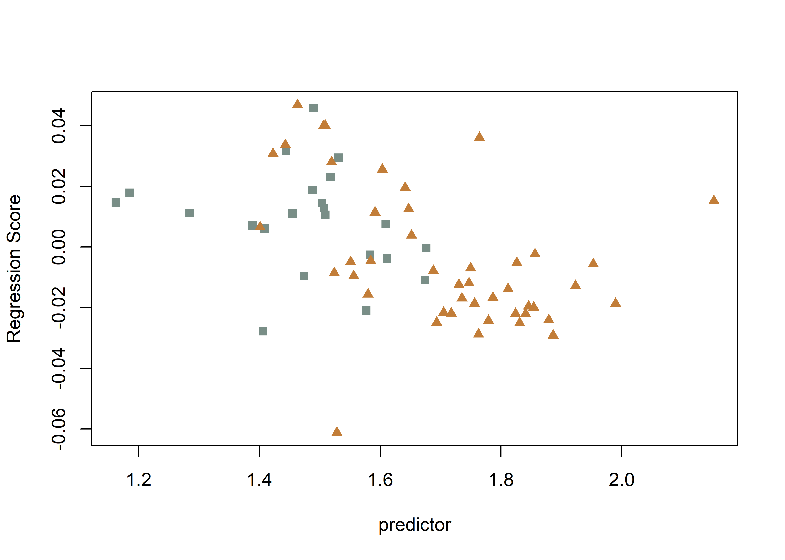
## common allometric component (Mitteroecker 2004)
plotAllometry(fit.size,
size = gdf$size,
logsz = TRUE,
method = "CAC",
pch = pch.gps,
col = col.gps)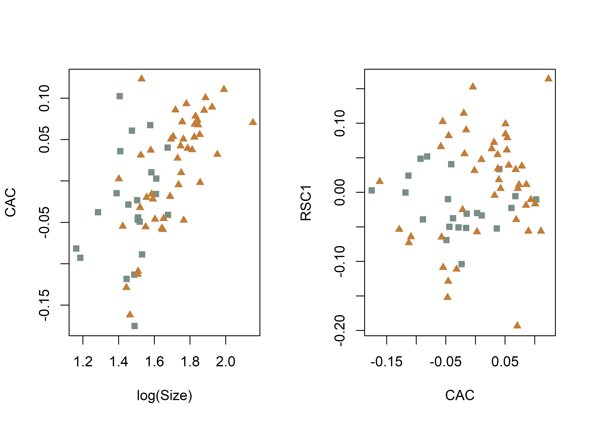
## size-shape pca (Mitteroecker 2004)
plotAllometry(fit.size,
size = gdf$size,
logsz = TRUE,
method = "size.shape",
pch = pch.gps,
col = col.gps)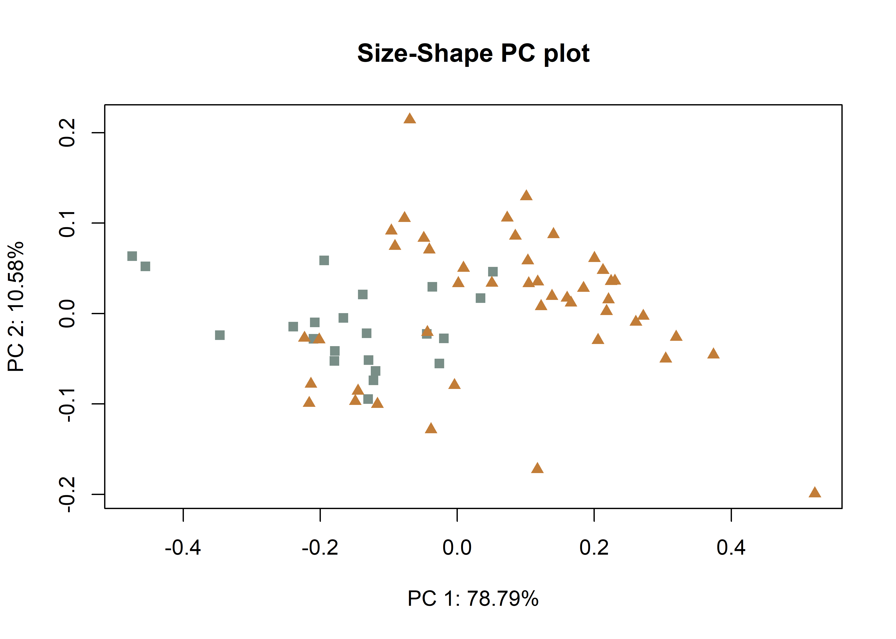
## PredLine (Adams and Nistri 2010)
plotAllometry(fit.unique,
size = gdf$size,
logsz = TRUE,
method = "PredLine",
pch = pch.gps,
col = col.gps)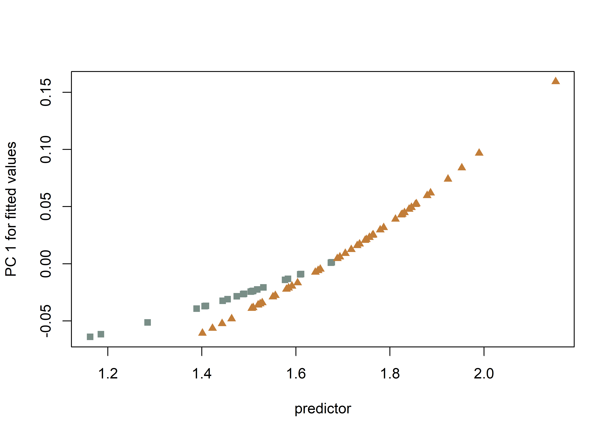
3.6 Procrustes ANOVA: Shape and size
# shape
fit.sh.reg <- procD.lm(shape ~ region,
data = gdf,
print.progress = FALSE,
iter = 9999)
# shape
anova(fit.sh.reg)##
## Analysis of Variance, using Residual Randomization
## Permutation procedure: Randomization of null model residuals
## Number of permutations: 10000
## Estimation method: Ordinary Least Squares
## Sums of Squares and Cross-products: Type I
## Effect sizes (Z) based on F distributions
##
## Df SS MS Rsq F Z Pr(>F)
## region 1 0.04296 0.042962 0.0536 3.6811 2.077 0.0161 *
## Residuals 65 0.75862 0.011671 0.9464
## Total 66 0.80158
## ---
## Signif. codes: 0 '***' 0.001 '**' 0.01 '*' 0.05 '.' 0.1 ' ' 1
##
## Call: procD.lm(f1 = shape ~ region, iter = 9999, data = gdf, print.progress = FALSE)# size
fit.sz.reg <- procD.lm(size ~ region,
data = gdf,
print.progress = FALSE,
iter = 9999)
# size
anova(fit.sz.reg)##
## Analysis of Variance, using Residual Randomization
## Permutation procedure: Randomization of null model residuals
## Number of permutations: 10000
## Estimation method: Ordinary Least Squares
## Sums of Squares and Cross-products: Type I
## Effect sizes (Z) based on F distributions
##
## Df SS MS Rsq F Z Pr(>F)
## region 1 20.277 20.2766 0.30681 28.769 3.7643 1e-04 ***
## Residuals 65 45.812 0.7048 0.69319
## Total 66 66.089
## ---
## Signif. codes: 0 '***' 0.001 '**' 0.01 '*' 0.05 '.' 0.1 ' ' 1
##
## Call: procD.lm(f1 = size ~ region, iter = 9999, data = gdf, print.progress = FALSE)3.7 Modularity
land.gps <- c("A","A","B","B","B","A","A","A","A","A","A","A","A","A",
"B","B","B","B","B","B","B","B","A","A","A","A","A","A",
"A","A")
mod <- modularity.test(Y.gpa$coords,
partition.gp = land.gps,
iter = 9999,
seed = NULL,
opt.rot = TRUE,
print.progress = FALSE)
summary(mod)##
## Call:
## modularity.test(A = Y.gpa$coords, partition.gp = land.gps, iter = 9999, seed = NULL, opt.rot = TRUE, print.progress = FALSE)
##
##
##
## CR: 0.94387
##
## P-value: 6e-04
##
## Effect Size: -4.7686
##
## Based on 10000 random permutations## modularity plot
plot(mod)
3.8 Morphological integration
it <- integration.test(Y.gpa$coords,
partition.gp = land.gps,
print.progress = FALSE,
iter = 9999)
summary(it)##
## Call:
## integration.test(A = Y.gpa$coords, partition.gp = land.gps, iter = 9999, print.progress = FALSE)
##
##
##
## r-PLS: 0.9676
##
## Effect Size (Z): 6.23893
##
## P-value: 1e-04
##
## Based on 10000 random permutations## integration plot
plot(it)
3.9 Morphological disparity
# morphological disparity by shape
morphol.disparity(fit.sh.reg,
groups = qdata$region,
data = gdf,
print.progress = FALSE,
iter = 9999)##
## Call:
## morphol.disparity(f1 = fit.sh.reg, groups = qdata$region, iter = 9999, data = gdf, print.progress = FALSE)
##
##
##
## Randomized Residual Permutation Procedure Used
## 10000 Permutations
##
## Procrustes variances for defined groups
## north south
## 0.008772021 0.012569634
##
##
## Pairwise absolute differences between variances
## north south
## north 0.000000000 0.003797614
## south 0.003797614 0.000000000
##
##
## P-Values
## north south
## north 1.0000 0.1435
## south 0.1435 1.0000# morphological disparity by size
morphol.disparity(fit.sz.reg,
groups = qdata$region,
data = gdf,
print.progress = FALSE,
iter = 9999)##
## Call:
## morphol.disparity(f1 = fit.sz.reg, groups = qdata$region, iter = 9999, data = gdf, print.progress = FALSE)
##
##
##
## Randomized Residual Permutation Procedure Used
## 10000 Permutations
##
## Procrustes variances for defined groups
## north south
## 0.3070126 0.8679523
##
##
## Pairwise absolute differences between variances
## north south
## north 0.0000000 0.5609397
## south 0.5609397 0.0000000
##
##
## P-Values
## north south
## north 1.0000 0.0603
## south 0.0603 1.00003.10 Mean shapes
# subset landmark coordinates to produce mean shapes
new.coords <- coords.subset(A = Y.gpa$coords,
group = qdata$region)
names(new.coords)## [1] "north" "south"# group shape means
mean <- lapply(new.coords, mshape)
## plot mean shape north
plot(mean$north)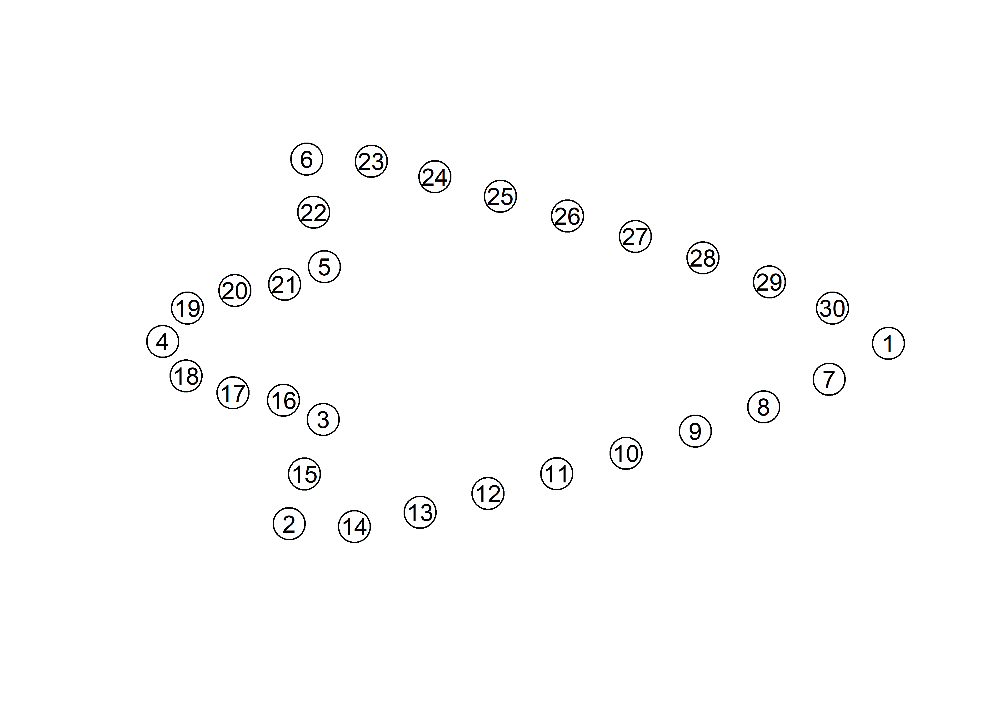
## plot mean shape south
plot(mean$south)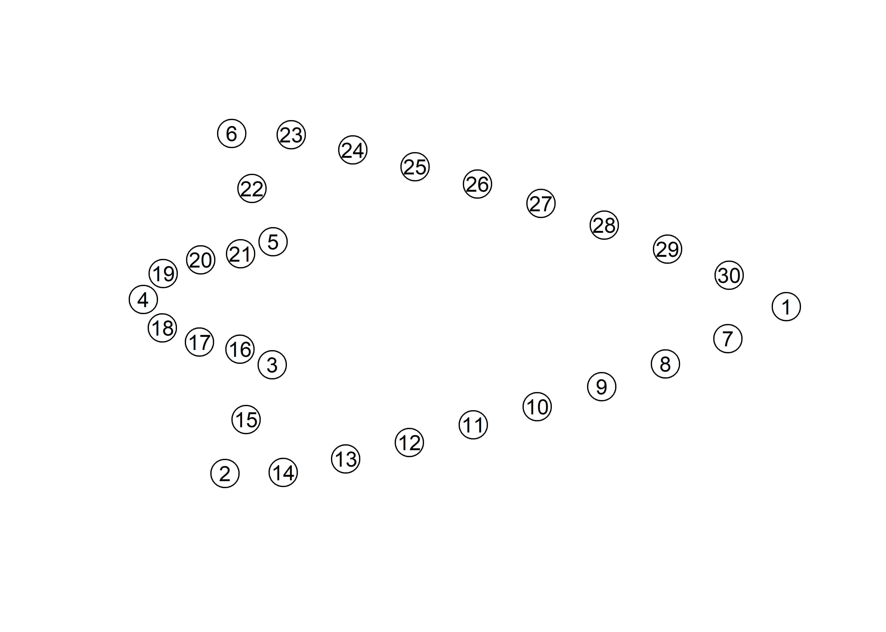
## comparison plot
plotRefToTarget(mean$north,
mean$south,
method = "points",
mag = 1,
useRefPts = TRUE)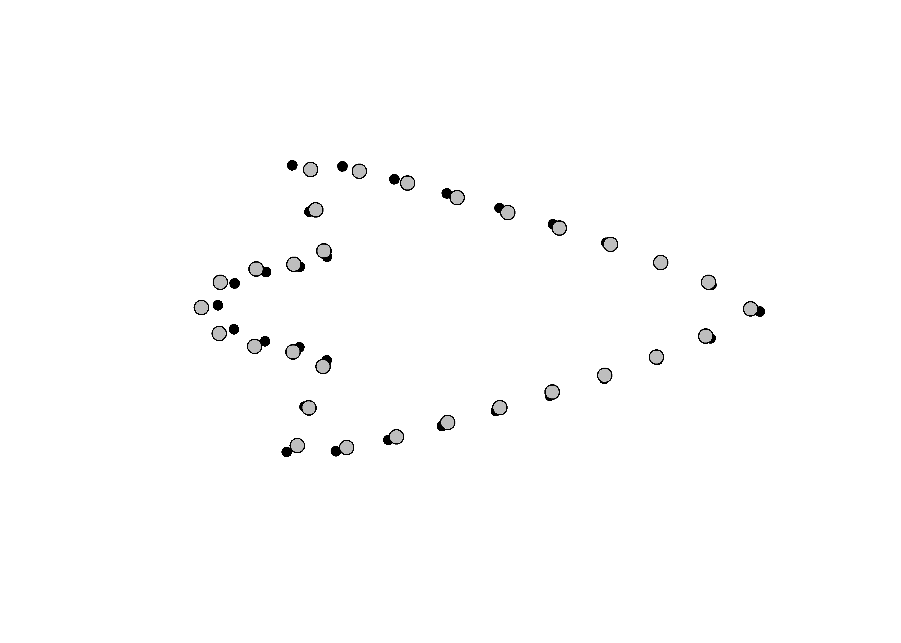
## composite figure
knitr::include_graphics('figures/gm-mshape.jpg')